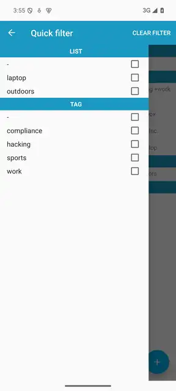

0x54ask
قراءة وكتابة
0x54ask is a todo.txt manager. It supports context (@W at work, @H at home...) and tags (+linux, +bank, +tero). 0x54ask forks SimpleTask Cloudless. It provides passive perks: data safety, automerge, filesystem protection - and it never connects Internet, at all. Todo.txt manager: context and tags Co
✓ ترخيص مفتوح (GPL-3.0-or-later) · آخر تحديث: 2026-09-03
1.1.2 (fork of Simpletask)الإصدار
12.4 MBالحجم
GPL-3.0-or-laterالرخصة
Open in Kanzتحميل APK (12.4 MB)
Download APK
SHA-256: f05781226bb84205caa5b5aa6a511afcb8df86de8bc4b53e33b7de34c2940e8a

امسح الكود لفتح صفحة التطبيق
Scan to open this app page
لو كنز مش متثبت عندك: نزّل متجر كنز.
Not installed? Get the Kanz store.